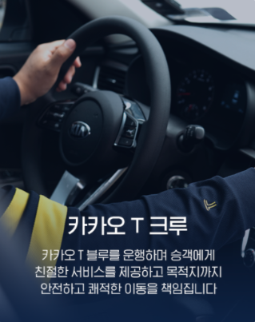

카카오 T와 제휴합 법인 택시회사의 채용안내입니다.
정규직기사
카카오 T 크루를
모집합니다
카카오 T 크루를
모집합니다
택시 면허 없이도 지원 가능!

크루 지원하기
크루를 시작해야하는 이유!
퇴직금이 보장되는 안정적인 정규직이며,
효율적이고 쾌적한 근무환경을 제공합니다.
효율적이고 쾌적한 근무환경을 제공합니다.
.png)
인센티브 제도
월급제 4대보험 정규직!
월급제 4대보험 정규직!
.png)
전문교육, 인공지능
배차시스템 효율적 근무!
배차시스템 효율적 근무!
.png)
깔끔한 차량과 스마트하고
쾌적한 근무환경!
쾌적한 근무환경!
.png)
처음이라도?
임시택시운저자격제도!
누구나 가능!
임시택시운저자격제도!
누구나 가능!
크루 인터뷰
"생각보다 즐겁고 안정적 입니다."
"주위의 편견도 있겠지만 일단 시작해보세요."
"주위의 편견도 있겠지만 일단 시작해보세요."
먼저 시작한
크루 이야기
크루 이야기

바로 시작하세요!
임시 택시운전 자격 제도
임시 택시운전 자격 제도
필수자격조건
⦁ 1년 이상의 운전 경력과범죄 이력 조회 시 결격 시유가 없는분
⦁ 배졍된 택시 회사의 면접 및 실기 평가를 통과해야 함
⦁ 3개월 내 정식 택시운전자격증 취득 및 법정 필수 교육 이수
⦁ 1년 이상의 운전 경력과범죄 이력 조회 시 결격 시유가 없는분
⦁ 배졍된 택시 회사의 면접 및 실기 평가를 통과해야 함
⦁ 3개월 내 정식 택시운전자격증 취득 및 법정 필수 교육 이수
지금 지원하세요,
친절히 안내해 드릴게요!
친절히 안내해 드릴게요!
더 궁금한 점은? 카카오 T 크루 취업안내 블로그 >
카카오 T 크루 근무조건
근무처 : 카카오 T 블루 운영 법인 택시회사의
채용지역 : 지원과정에서 확인 및 선택 가능
업무내용 : 카카오 T 블루 서비스 차량 운행
근무형태 : 정규직 (사대보험, 퇴직금 보장)
급여체계 : 기본급 + 성과금 (전액관리제)
근무시간 : 주/야 교대, 약 10시간
결격사유 : 범죄이력 및 신용불량자
※택시회사에 따라 세부적인 근무조건이 상이할 수 있습니다.
채용 절차
1
크루 지원 접수
↓
2
택시회사 배정
↓
3
면접 후 취업
↓
4
전문교육 (최대2일)및 수습운행 (최소2주)
↓
5
크루 활동 시작
택시회사 취업 조건
☑ 운정적성 정밀검사 '적합판정'
(접수처 : 교통안전공단 홈페이지)
☑ 택시자격 검정시험 '합격 후 면허 취득'
(접수처 : 택시운전자격검정 홈페이지)
☑ 법인택시 신규운전자 채용교육 '수료'
(접수처 : 교통연수원 홈페이지)
채용문의처 : recruit@kmscorp.co.kr
⚠ 꼭 읽어주세요!
⦁ 본모집 공고는 카카오 t 블루를 운영하는 법인택시회사의
채용 공고입니다.
⦁ 접수된 내용을 토대로 2~3일 이내 개별 연락 드립니다.
⦁ 택시회사 배정 시점은 개인마다 차이가 있을 수 있습니다.
⦁ 택시회사에 따라 세부적인 근무조건 (시간,복지 제도등)이
상이할 수 있습니다.

새로운 시작을 준비한다면?
크루를 추천합니다!
카카오T와 함께 달려요!
크루를 추천합니다!
카카오T와 함께 달려요!